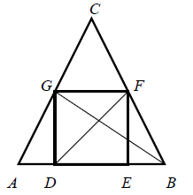
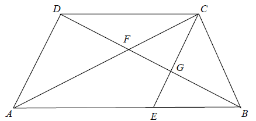

W trójkąt równoramienny \(ABC\) wpisano kwadrat w taki sposób, że bok \(DE\)
kwadratu zawiera się w podstawie \(AB\) trójkąta, a wierzchołki \(F\) i \(G\) kwadratu leżą
odpowiednio na ramionach \(BC\) i \(AC\) trójkąta (zobacz rysunek).  Pole trójkąta \(CFG\) jest równe sumie pól trójkątów
\(ADG\) i \(BEF\). Oblicz sinus kąta ostrego, pod jakim przecinają się odcinki \(DF\) i \(BG\).
\(\frac{5\sqrt{26}}{26}\)
Na podstawie AB trapezu \(ABCD\) (\(|AB|\gt |CD|\)) wyznaczono taki punkt \(E\), że
czworokąt \(AECD\) jest równoległobokiem. Przekątna \(BD\) przecina odcinki \(CA\) i \(CE\)
odpowiednio w punktach \(F\) i \(G\). Odcinki \(DG\) i \(BF\) są równej długości. Uzasadnij, że
\(\frac{|AB|}{|CD|}=\frac{1+\sqrt{5}}{2}\). 